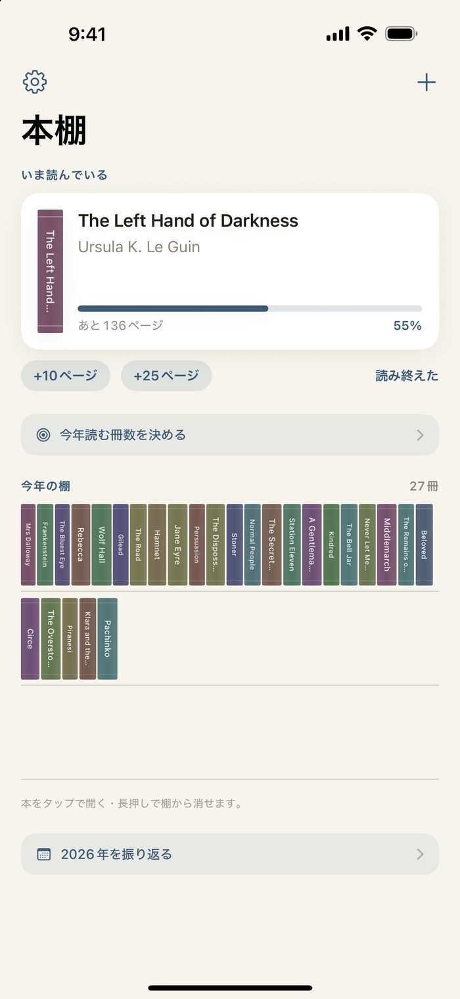
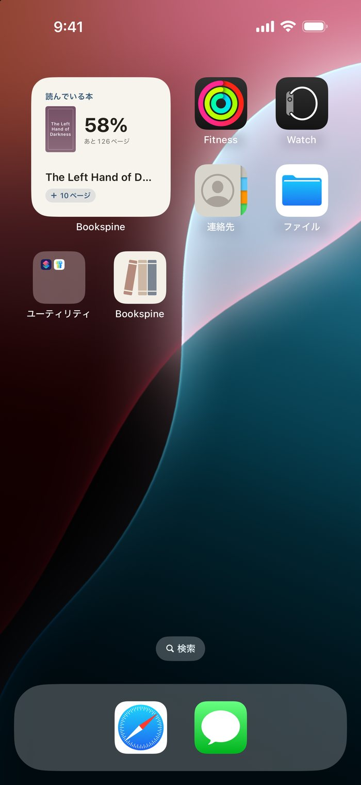

Bookspine・使い方ガイド・English
今読んでいる本をiPhoneのホーム画面に出す方法
読書ウィジェットを置くと、読みかけの本が1日に何度も見る場所に出ます。表紙と、どこまで読んだか、あと何ページか。
Bookspineでの置き方を紹介します。Smallウィジェットは無料です。
1. 読んでいる本を入れる
- Bookspineを開いて＋をタップします。
- 書名か著者名で探すか、裏表紙のバーコードを読みます。書名・著者・表紙が入ります。
- 本は「いま読んでいる」に入ります。

バーコードが無い本や、候補に出ない本は手で入れられます。書名だけで登録できます。
2. ホーム画面にウィジェットを置く
- ホーム画面の何もないところを長押しして、アプリが揺れるまで待ちます。
- 左上の「編集」（または＋）をタップして、「Bookspine」を検索します。
- Smallを選んで「ウィジェットを追加」をタップします。

3. ウィジェットでページを進める
読んだら、ウィジェットの「+10ページ」をタップします。アプリは開きません。最後のページまで進むと、読み終えた本として棚に並びます。
もっと大きく出したいときは
Bookspine Pro（買い切り・サブスクではありません）で使えます。
- Medium：表紙・進み具合のバー・あと何ページ・今年の冊数
- Large：今年の棚。読み終えた本が並びます
- ロック画面：ロックを解除しなくても進み具合が見えます
よくある質問
読書ウィジェットは無料ですか？無料です。Smallウィジェット（いま読んでいる本・表紙か背表紙・進み具合）は、広告なし・アカウントなしで使えます。Medium・Large・ロック画面のウィジェットはBookspine Pro（買い切り）です。
2冊を並行して読んでいます。どちらが出ますか？Smallウィジェットには、いちばん最近読み始めた本が出ます。
ページ数が分からない本は？書名だけで登録できます。その場合、進み具合はパーセントで持ち、ウィジェットを1回押すごとに5%進みます。
最後のページまで進むとどうなりますか？読み終えた本として、棚に並びます。棚には読んだ順に本が並んでいきます。
App StoreでBookspineを入手
サブスクなし・広告なし・アカウント不要・Bookspineについて